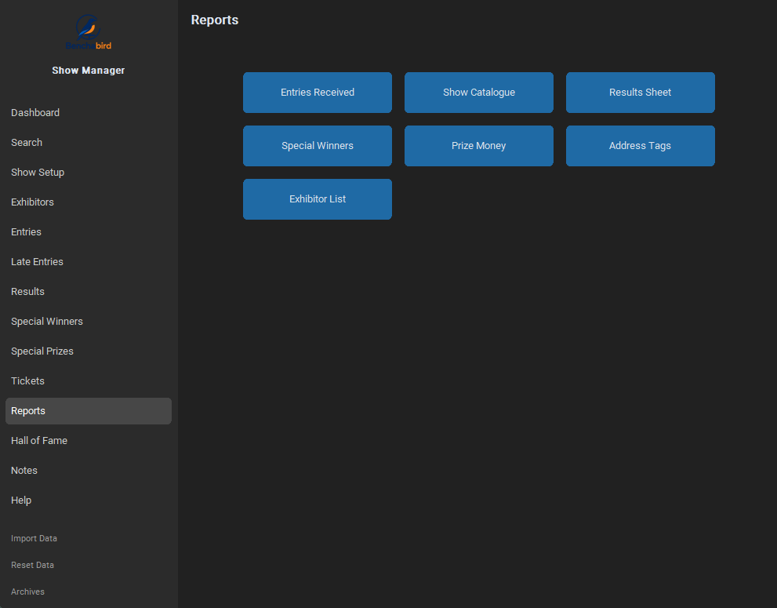
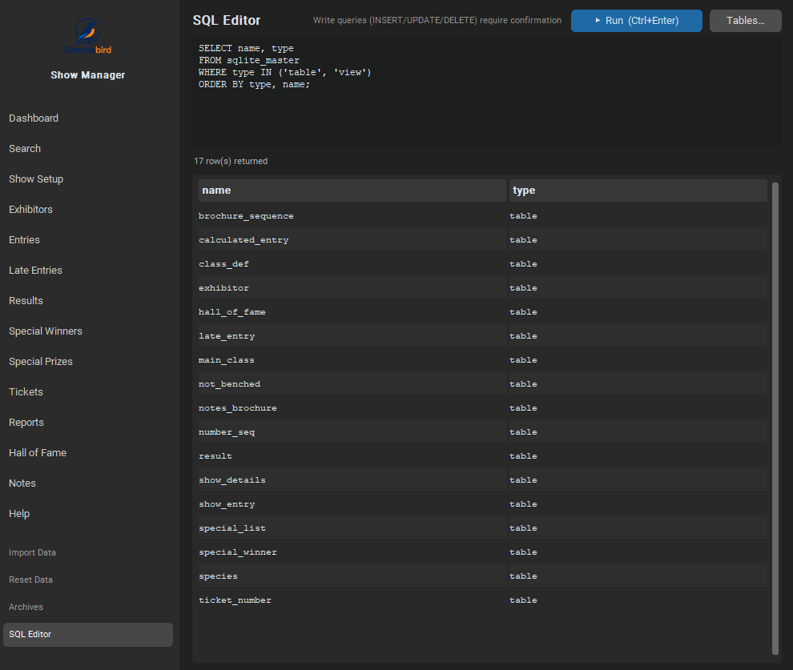
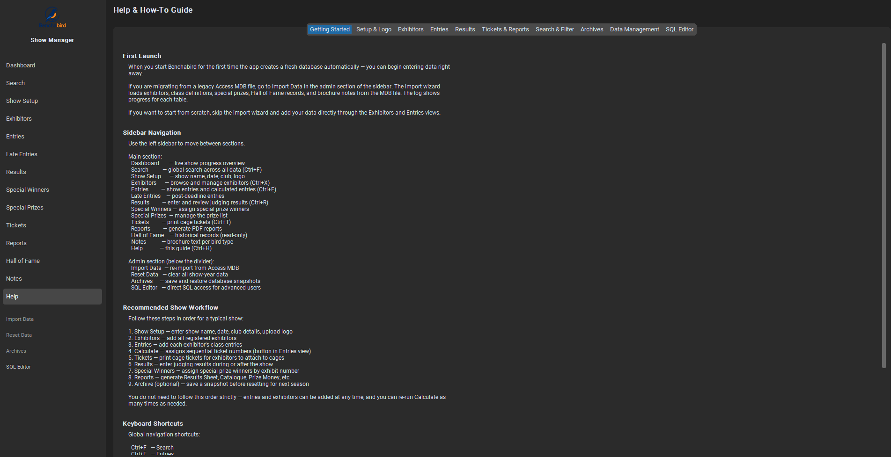

Run show day
from benching to results.
Benchabird replaces legacy Access workflows with a fast, offline-first Windows app for check-in, judging sheets, result capture, and printable reports.

Everything a show needs
From check-in to final report — no spreadsheets, no Access, no internet required.
Show Participants
Search by name, email, number, or class, then bench arrived birds and allocate exhibit numbers as they arrive.
Judges Catalogue
Print Access-style judging sheets grouped by category and class for handwritten placings and not-benched marks.
Show Day Capture
Capture completed judge pages with radio-button placings, NB marks, and class reallocations before saving each category.
Validation & Publish
Review missing results, duplicate placings, and special-winner issues before generating final outputs.
PDF Reports
Preview, print, and save catalogue, marked catalogue, results, specials, prize money, tickets, and exhibitor reports.
Archives
Save named database snapshots before resets or major show-day changes, then restore previous shows when needed.
See it for yourself
A closer look at the key views.



From benching to prize ceremony
On show day, Benchabird keeps the paper workflow familiar while making capture and publishing faster.
Check in & bench
Search arriving exhibitors, bench present birds, allocate exhibit numbers, and add late entries where needed.
Print judging sheets
Generate the Judges Catalogue for judges to complete by hand, grouped by category, main class, and class.
Capture & publish
Enter placings and NB marks, assign special winners, validate issues, then print final results and catalogues.
Free and open source
MIT licensed. Your show data stays local, under your control — no account, no cloud, no telemetry.
Support Benchabird
Benchabird is built as a free, open-source tool for bird clubs and show organisers. If it saves your club time, reduces paperwork, or helps make show day easier — please consider supporting the project.
Support on Ko-fi